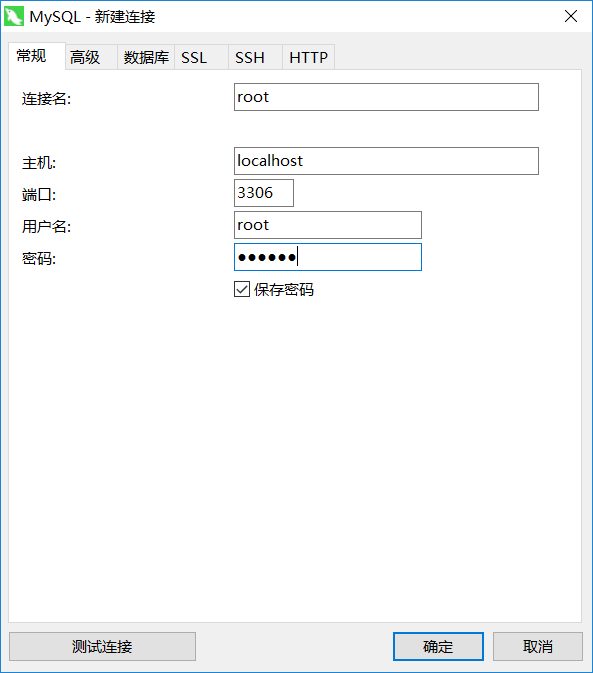
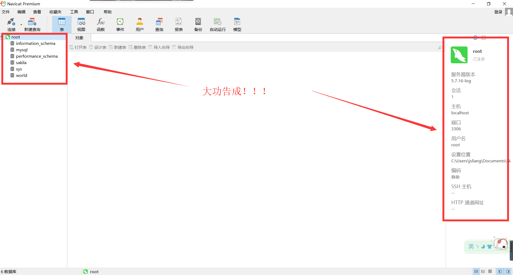

MySQL 安装
Create by jsliang on 2018-12-13 08:49:41
Recently revised in 2019-05-30 20:31:52
一切的折腾，均要有个度。并且，明白自己折腾的目的。
一 目录
不折腾的前端，和咸鱼有什么区别
| 目录 |
|---|
| 一 目录 |
| 二 前言 |
| 三 下载 |
| 四 安装 |
| 五 总结 |
二 前言
MySQL 是什么呢？MySQL 是最流行的关系数据库管理系统之一，体积小、速度快、总体成本低的缘故导致中小型网站的开发都乐意选用 MySQL。
Long long ago，jsliang 曾跟随大学老师，学习过 SQLserver，那时候的 SQL，纯粹是用 SQL 语句建表，各种秀……后来，为了应付毕设，囫囵吞枣，学习了 MongoDB，用 Express 连接它进行各种操作。当然，关系型数据库和非关系型数据库的区别将我折腾地体无完肤。
最近要学习 Node 基础，思来想去考虑一番，还是打算连接 MySQL，无他，因为正经学过关系型数据库而已。
三 下载
在这里，咱是用 Window 系统进行的下载安装，各位看官如果是用 Mac 或者其他，请看：
如果上面两篇都无法满足大佬需求，请自行百度或者 google。
那么下面开始安装：
- 直接打开 MySQL 下载页面：地址
- 选择系统 Windows
- 点击下载 MSI 安装包

然后，它会弹出窗口告诉你，需要登录或者注册：
jsliang 没有自己的账号，所以需要注册，但是点开注册页面，发现自己又不想注册了（太多账号了！不想再搞事情了），所以咱直接下载比较旧的版本吧：
最新版本是 8.0.13
双击打开，点击一系列确认后（Windows 10 安全机制会弹窗），弹出安装界面：
四 安装
那么现在开始正式安装，除了这里贴出的需要注意的地方，大致一路 Next 下去就 OK 了。
主要安装需要注意的地方为前 4 个步骤，请小伙伴们注意。
步骤 1. 在 Account and Roles 这块地方，它会询问到 MySQL Root Password 以及 Repeat Password，就是让你设置根数据库的登录密码，所以设置个比较容易记的密码并记到手机或者笔记吧。
比较容易记是怕小伙伴忘记，如果你的数据库非常值钱，还是搞个复杂的吧~

步骤 2. 在 Connect To Server 这部分，它会提示你设置用户和密码，这里的 User：root 是它默认给的，如果没其他需要，那就按它这个不动就行了，然后输入第 1 步中的密码，点击 Next 即可。

步骤 3. 这一步需要重新输入一次账号密码，然后点击红框中的 Check，报绿了点 Next 即可。

步骤 4. 到了 Install Complete 这一步，表明你已经搞定地 7788 了，点 Finish 结束安装。

步骤 5. 在第 4 步点击 Finish 后，它会弹出一个窗口，这里还不需要管它是啥，点击 × 关闭即可。

步骤 6. 键盘按 Win 键或者直接用鼠标点开 开始菜单，会看到它提示我们最近安装了个 MySQL，如果是 win7，应该也可以找到下面这个，点击打开它。

步骤 7. 在第 6 步点击后，它会弹个小黑框，让你先输入密码，密码正确后，你就可以使用 MySQL 了。如果是初次学习的 SQL，推荐去学习下 SQL 命令，照着黑窗口多敲两句 SQL 语句。

步骤 8. MySQL 的小黑框虽然有些装逼，但是现在是什么年代，操作个数据库还要敲大量 SQL 语句，对 jsliang 这前端人员来说，这太难以接受了，还是安装个 图形化工具 吧：
首先，打开上面的网址。
然后，将页面拉到下面，选择下图红框中的任一地址下载。
最后，进行安装破解：
- 解压文件夹，安装原版程序。
- 不要运行程序！！！不要运行程序！！！不要运行程序！！！重要的事情说三遍，因为破解前运行了程序会导致破解冲突。
- 根据 txt 的解说，将补丁安装到对应目录。
- 运行补丁程序，打补丁
- 操作成功！
步骤 9. 打开这个图形化工具，点击 文件 -> 新建连接 -> MySQL：

步骤 10. 输入前面步骤提到的账号密码，点击 确定：

步骤 11. 这时候可以看到我们的 root 数据库打开了，大功告成：

五 总结
在这篇文章中，我们提到了 MySQL 的下载、安装以及图形化工具的安装。
有些小伙伴对这些安装的感到最烦躁，因为这也要安装，那也要安装的，实在太烦了。
但是这又是必要的步骤，只有前面的搭建好了，后面我们进行 Node 连接 MySQL 数据库就轻便多了。
jsliang 广告推送：
也许小伙伴想了解下云服务器
或者小伙伴想买一台云服务器
或者小伙伴需要续费云服务器
欢迎点击 云服务器推广 查看！


jsliang 的文档库 由 梁峻荣 采用 知识共享 署名-非商业性使用-相同方式共享 4.0 国际 许可协议进行许可。
基于https://github.com/LiangJunrong/document-library上的作品创作。
本许可协议授权之外的使用权限可以从 https://creativecommons.org/licenses/by-nc-sa/2.5/cn/ 处获得。